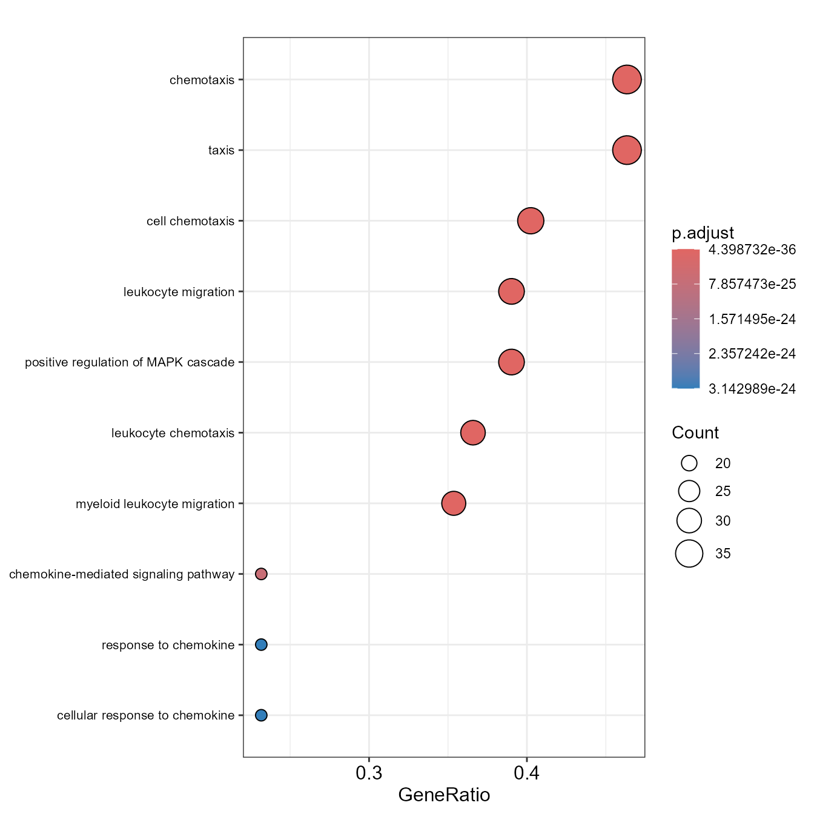
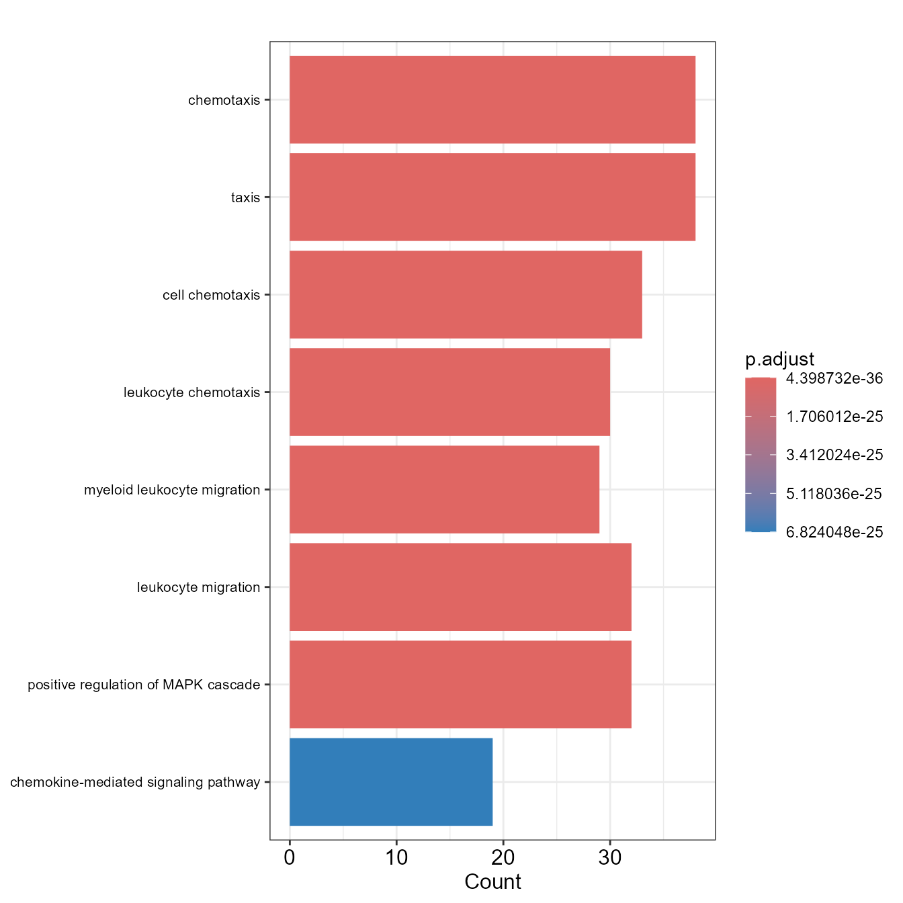
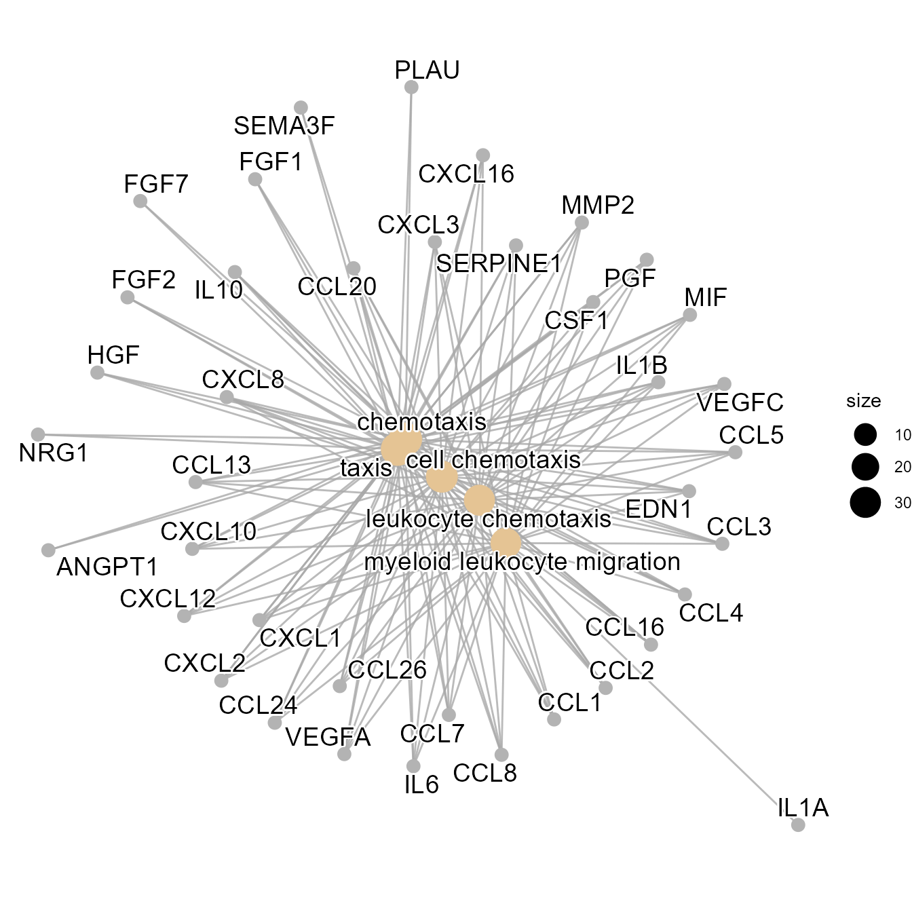

Pathway Enrichment Module
Enrichment.RmdPathway Enrichment Module Pathway Enrichment Module supports users to visualize tabular and graphical pathway enrichment results of interested gene lists, which can be produced from previous analysis of Linkage. The enrichment analysis can link these gene lists with underlying molecular pathways and functional categories such as gene ontology (GO) and Kyoto Encyclopedia of Genes and Genomes (KEGG).
library(linkage)
library(LinkageData)
Geneset <- system.file("extdata", "SASPGeneSet.rdata", package = "LinkageData")
load(Geneset)
go <-
GOEnrichment(gene_list = SASPGeneSet,
Species = "Homo",
genelist_idtype = "external_gene_name")
KEGG <-
KEGGEnrichment(
gene_list = SASPGeneSet,
Species = "Homo",
genelist_idtype = "external_gene_name"
)
EnrichDotPlot(go)
EnrichBarPlot(go)
EnrichUpsetPlot(go)
EnrichCnetPlot(go)
EnrichWordCloud(go, Type = "GO")